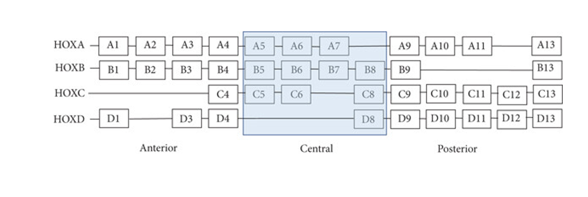
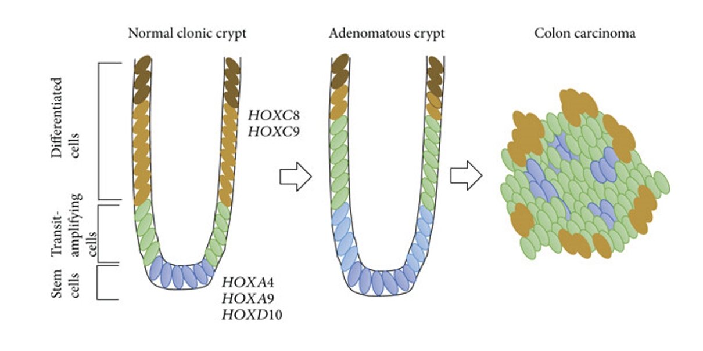

Cancer remains one of the most challenging puzzles in medical and biological research. My current work under the supervision of Dr. Gilberto Schleiniger is inherently interdisciplinary, exploring molecular pathways that lead to the progression of colon cancer and developing treatment strategies. Specifically, I use mathematical modeling and analysis to simulate multiple cellular pathways, i.e., HOX, WNT, and RA, that regulate cancer development, with a particular focus on colorectal cancer. This research is complemented by laboratory experiments conducted at ChristianaCare’s Helen F. Graham Cancer Center & Research Institute in Newark, DE, under the supervision of my experimental co-advisor, Bruce M. Boman (M.D., Ph.D., MSPH, FACP).
Hox genes are crucial transcription factors in tumorigenesis and embryonic development. In humans, there are 39 hox genes with four clusters HOXA, HOXB, HOXC, and HOXD located on chromosomes 7, 17, 12, and 2, respectively.

(Bhatekar et al., 2018)
My collaborators at the Helen F. Graham Cancer Center & Research Institute at Christiana Care recently discovered that HOXA5 and HOXA13 are significant regulators of both the WNT and RA pathways. Depending on the biological mechanism, these genes can either cause colon tumor formation or its suppression.

(Bhatekar et al., 2018)